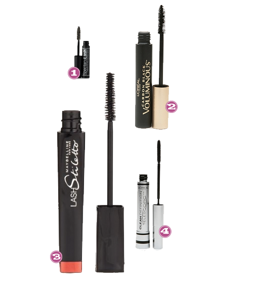
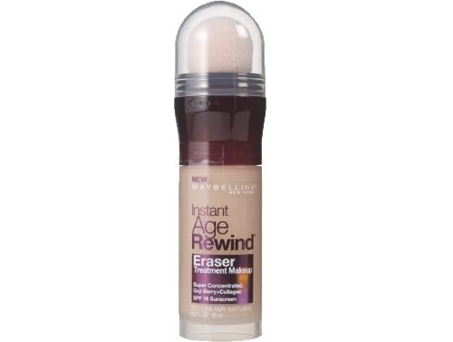

Are you a shiny person? I’m a shiny person and by shiny I mean by mid-day I’m an oil slick. I’ve found something that seems to be helping and it’s not THAT expensive! “Tricks of the Trade” Anti-Shine Primer by Sephora Collection. I put it on after my moisturizer but before my foundation and by mid-day, if I have shine it’s only because I’ve gone outside and I’m sweating in this 500 degree 1000% humidity pit we are living in also known as Houston, TX. Yall come visit!
Purple People Eater
May 20, 2010 by

I have never really been a pink type of girl. I like pink, but I don’t LOVE pink. When I was little, my favorite color was purple. I wanted purple everything. My first car was even purple (no idea what I was thinking) So, purple is still near and dear to my heart. Purple looks great accented with oranges or greens and my personal fav turquoise!
- Forever21, Origami Dress
- Amazon, OPI Funky Dunkey
- Old Navy, Printed Flip Flops
- Target, Covergirl Eye Enhancer Purple Pop
- Charlotte Russe, Patent Rosette Wedges
- Charlotte Russe, Embroidered Smocked Tube Top
- Walmart, Womens Smocked Blouson Top
- Chadwicks, Tiered Knit Dress
- Newport News, Pleated Knee Length Skirt
- Motherhood Maternity, Sleeveless Screen Print Maxi Dress
- Target, Twist Polka Dot Swimwear
- Target, Merona Croco Clutch
Have You Tried These?
May 11, 2010 by
I have seen all of these products at one time or another and wanted to try them to see if there is greatness there…So tell me…have you tried anything here and if so did you like it?

- Bobbi Brown Cosmetics, Treatment Lip Shine SPF 15
- Sephora, Laura Mercier Oil Free Foundation
- Kiehls, Facial Fuel No-Shine Moisturizing Lip Balm
- Drugstore.com, TreSemme Fresh Start Dry Shampoo
- Drugstore.com, Jergens Natural Glow Foaming Daily Moisturizer
- Drugstore.com, Garnier Nutritioniste Skin Renew Anti Puff Eye Roller
Tipsy Favs: Mascara
April 8, 2010 by
Time for a another weigh in. Â Mascara. Â This is something I hold near and dear to my heart. Â Or something I accidentally poke my eye with and ensure the worst.pain.known.to.a.woman.
Here we go….

Sarah:  SpectacuLash® Mascara (Black) I like this mascara because it gives me the long, thick, eyelashes I want, without ever being too clumpy.
Der:  Loreal Voluminous Mascara This is one of the only makeup products that I repeatedly buy. I like plump, black lashes and this is the best drug store mascara that I have found for that affect. Also, the makeup artist that I hired on my wedding day…. showed up with this mascara in her bag of tricks, so it must be good 🙂
AK:  Maybelline Lash Stilleto It’s not goopy and clumpy and it separates my lashes perfectly! And it actually comes off as opposed to sticking to your lashes for days on end.
Court: Â Loreal Telescopic Definition Lengthening I’ve tried almost every new mascara that comes out and I always end up sticking to this. Â I love the comb like brush, even though you better learn to use it and learn to use it fast. Â Lets just say combing through caked on lashes doesn’t end up with the neatest look. Â However, don’t let that scare you gals, once you get the hang of it this mascara never fails to provide clean, defined, long lashes that really pop.
Products On A Stick
March 22, 2010 by
The Rodeo just ended here in Houston which generally means I would have been stuffing my piehole with sausage on a stick, mountains of curly fries, Goode Co. chicken sandwiches, maybe 1 or 4 funnel cakes. Alas we did not make it out there, at least not in the sense that we normally do…we went to the petting zoo but that was about it. So no food this year for me! What’s better than Sausage on a Stick? Products on a Stick!! Anybody tried any of these?

- Sephora, Healing Stick
- Sephora, Josie Maran Mini Argan Stick
- Sephora, L’Occitane Shea Butter Lip Balm Stick
- Amazon, Neutrogena Makeup Correcting Stick
- Nordstrom, Shiseido Matifying Stick
- Beauty.com, Paula Dorf Sweep Away Cleanup Stick
- Sephora, Tarte FRXtion
- Sephora, Lorac Vitamin E Stick
Tipsy Favs: Lip Color
March 2, 2010 by
We’re baaaaaaack! Today we would like to discuss daily go-to lip color. What do you wear? These are our MostDaysIWearThis shades
- Court: Revlon Matte Lipstick, Mauve It Over-I love the matte look, its goes with every.single.color combo I use with my makeup–even when I experimenting with bold eyes or natural looks.
- Der: Chanel Lip Glossimer, Giggle-I know I preach frugalista til the death of me on Tipsy and this definitely doesn’t fit the bill on that. BUT I purchased this lip gloss over 2 years ago and it’s still truckin and it’s still my favorite neutral for everyday wear.
- AK: Bobbi Brown Cosmetics Lip Color, Slopes-I’m a fan of matte finish lipstick. I hoard lipstick, if I’m being honest. This is my long running fav…I know the site says its a flushed red but to me it’s more like a toned down neutral-ish plum kind of color. It’s really creamy and smooth going on and I just love the shade.
- Sarah: Burt’s Bees Lip Shimmer, Fig-I’m more of a chap stick wearer than a lip stick or gloss wearer because I don’t like the way it feels. The Burts Bees is perfect because it’s my favorite chap stick and just a hint of color so I don’t look washed out.
Eyebrow Fake Out
February 25, 2010 by

I was blonde as a child, but now my hair is brown. My pesky eyebrows and eyelashes have remained in my childhood days and have yet to get the memo. So, I am left with finding a solution that allows me to look like I might actually have some brows. I have found the best eyebrow product ever. Seriously. I kid you not.
I apply this with an angle brush with tiny little strokes. You can mix the colors to create your custom shade. It works wonders, looks completely natural (ie, no one ever thinks I have drawn on catepillars on my forehead) and lasts FOREVA. Don’t hesitate, go on.. getcha some!
Maybelline Foundation Love
January 27, 2010 by
Der brought us her thoughts on Maybelline’s Superstay Silky foundation and I’ll have to admit its aiighht (alright). But what I need you ladies to do is feast your eyes upon THIS.

This is Maybelline’s Instant Age Rewind® The Eraser Treatment Makeup. The perks? It looks like a bingo blotter, you can put it on in a real hurry (all you working moms) and it really gives a silky, not caked-on-finish. I would recommend this to anyone who has ten minutes to do make up each day. And, like I said, it looks like a bingo blotter. Oh and its 10 bucks!
Der Daily Beauty Staples
January 12, 2010 by

I don’t always wear the same make-up every day, like a lot of my Tipsy girls do, but I can tell you that I have noticed that when I am in a hurry… I reach for my tried and true staples. Here they are.. the best of the best from a drug store make-upaholic.
- Maybelline, Expert Wear Blush in Apricot Flush- the perfect pinched my cheeks flush I need to keep from looking like a zombie and it seems to stay on all day.
- Covergirl, Lash Exact Mascara in Black- This is my daily mascara. It’s so clean and doesn’t flake or clump at all.
- Maybelline, Superstay Silky Foundation – I saw this foundation used on Tim Gunn’s Guide to Style ( um, sad about that cancellation BTW) and so I had to try it out. It’s awesome! Stays on all day and is light as a feather.
- Maybelline, Experwear Single Eyeshadow in Creme De Cocoa- Neutral and slightly shimmery and easy to wear or blend with other colors.
- Covergirl, Outlast Smoothwear Eyeliner in Espresso- goes on so smooth and stays on like no other.
- Hardcandy, Honeymoon Peach Blush– I pop one sweep of this over my cheekbones, on top of my regular blush. This is a recent find and I don’t know how I ever lived without it.
Make-Up Bag It
January 11, 2010 by
As a make-up junkie… I tend to run out of places to store all my prized products. In my purse you will find a bazillion lipglosses, some mascaras I’m trying this week, and many many other things. I need some more organization! Etsy has some super cute printed make-up bags. Now, which one do I choose???


{kind=link}
Recent Comments